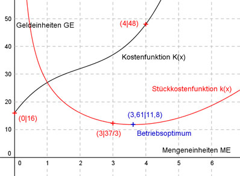
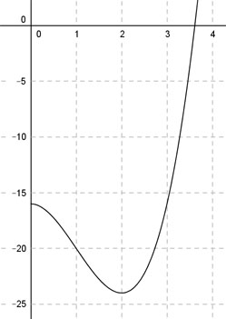
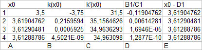

Aufgabe 134 Für eine ganzrationale Kostenfunktion 3. Grades gelten folgende betriebliche Bedingungen: Die Fixkosten betragen 16 Geldeinheiten (GE), die Produktion von 4 Mengeneinheiten (ME) kostet 48 GE, die Grenzkosten für 2 ME betragen 4 GE, und die Stückkosten für 3 ME sind 37/3 GE. Bei wieviel ME liegt das Betriebsoptimum?  Allgemeine Form einer ganzrationalen Kostenfunktion 3. Grades: K(x) = ax3 + bx2 + cx + d K’(x) = 3ax2 + 2bx + c K’’(x) = 6ax + 2b K(x) d Stückkostenfunktion k(x) = ------ = ax2 + bx + c + --- x x d k’(x) = 2ax + b - ---- x2 d k’’(x) = 2a + 2 ---- x3 4 Bedingungen: 1. Die Fixkosten betragen 16 GE bedeutet: K(0) = 16 --> a * 03 + b * 02 + c * 0 + d = 16 --> d = 16 2. Die Produktion von 4 ME kostet 48 GE bedeutet: (d = 16 eingesetzt) K(4) = 48 --> a * 43 + b * 42 + c * 4 + 16 = 48 --> 64a + 16b + 4c + 16 = 48 |-16 64a + 16b + 4c = 32 I 3. Die Grenzkosten für 2 ME betragen 4 GE bedeutet: K’(2) = 4 --> 3a * 22 + 2b * 2 + c = 4 --> 12a + 4b + c = 4 II 4. Die Stückkosten für 3 ME sind 37/3 GE bedeutet: kv(3) = a * 3² + b * 3 + c + (16/3) = 37/3 --> 9a + 3b + c + 16/3 = 37/3 |-16/3 9a + 3b + c = 7 III II * (-4) + I -48a - 16b - 4c = -16 64a + 16b + 4c = 32 ---------------------- 16a = 16 |:16 a = 1 a = 1 in II eingesetzt: 12 * 1 + 4b + c = 4 |-12 4b + c = -8 IV a = 1 in III eingesetzt: 9 * 1 + 3b + c = 7 |-9 3b + c = -2 V IV * (-1) + V -4b - c = 8 3b + c = -2 ------------- -b = 6 |:(-1) b = -6 a = 1 und b = -6 in III eingesetzt: 9 * 1 + 3 * (-6) + c = 7 9 - 18 + c = 7 -9 + c = 7 |+9 c = 16 Gesuchte Kostenfunktion: K(x) = x3 - 6x2 + 16x + 16 Das Betriebsoptimum ist das Minimum der Stückkostenfunktion k(x): d k’(x) = 2ax + b - ---- = 0 x2 16 k’(x) = 2x - 6 - ----- = 0 | *x2 x2 2x3 - 6x2 - 16 = 0  Ermittlung der Nullstelle zwischen 3,5 und 4 mit dem Newtonverfahren und Excel: k(x0) x1 = x0 - ------- k’(x0)  Der letzte Wert in der Spalte E ist der gesuchte. Mit ausreichender Genauigkeit x0= 3,61 ME Betriebsoptimum. x3 - 6x2 + 16x + 16 k(x) = ----------------------- = x2 - 6x + 16 + 16/x x k(3,61) = 3,612 - 6 * 3,61 + 16 + 16/3,61 = k(3,61) = 13,03 - 21,66 + 16 + 4,43 = 11,8 GE 16 k’’(x) = 2 + 2 * ---- x3 16 K’’(3,61) = 2 + 2 * -------- > 0 --> Minimum 3,613 Koordinaten des Betriebsoptimums (3,61|11,8)